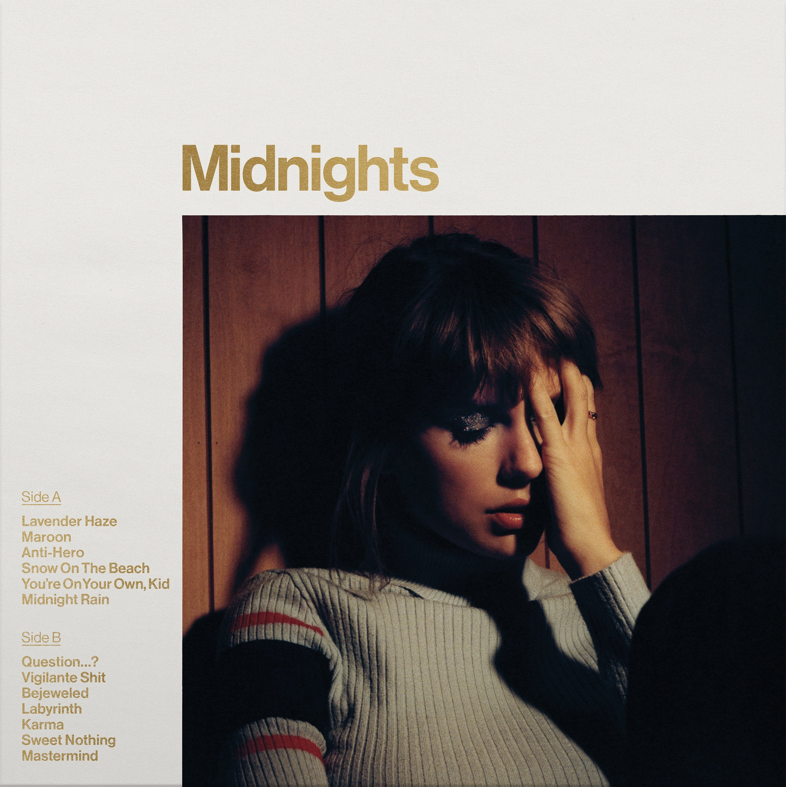

Taylor Swift‘s ‘Midnights’: A Personal, Emotionally Potent Late-Night Check-In
Jason LipshutzAlbum review
Taylor Swift’s 10th studio album, Midnights, was introduced to us as an exercise in restlessness. “This is a collection of music written in the middle of the night,” Swift wrote in August while announcing the project, “a journey through terrors and sweet dreams. The floors we pace and the demons we face.” This explanation for Midnights makes sense in the context of its arrival. Less than two years after the unexpected, two-pronged opus of Folklore and Evermore, and smack in the middle of her extended process of re-recording (and expanding) her first six studio albums, Swift certainly did not need to release an album of original material this year – especially considering that she already has a mini-career’s worth of new material that she has yet to even play on tour... read more